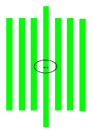
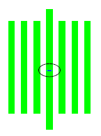
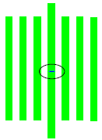
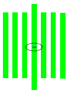
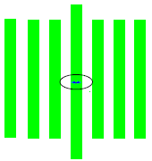
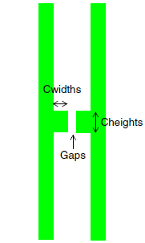

In these figures, CD(s) stands for critical dimension (CD) space, and CD(w) stands for CD width.
For test patterns with a node size of 45 nm or less, specify Version 12.2 in the Test Pattern Generator. This pattern is available starting with Calibre WORKbench 2010.2, and creates dense line/space features appropriate to the smaller node size.
|  | Row 4 — Seven dense lines with fixed width = CD(w)-10. Pitches vary:
|
|  | Row 6 — 12 of 24 structures containing seven dense lines with width = CD(w). In the first eight structures, pitches are incremented linearly, with 10 nm increments:
:
|
|  | Row 7 — Continuation of the pitch structures in Row 6. Structures 7-12 in Row 6 and all structures in Row 7 have a fixed width = CD(w) and pitches are incremented exponentially from CD(s)+CD(w)+70 up to a maximum pitch of (CD(w)+1200). |
|  | Row 8 — Seven dense lines with fixed width = CD(w)+10. Pitches vary:
|
|  | Row 9 — Seven dense lines with fixed width = CD(w)+20. Pitches vary:
|
|  | Row 12 — User control over:
|